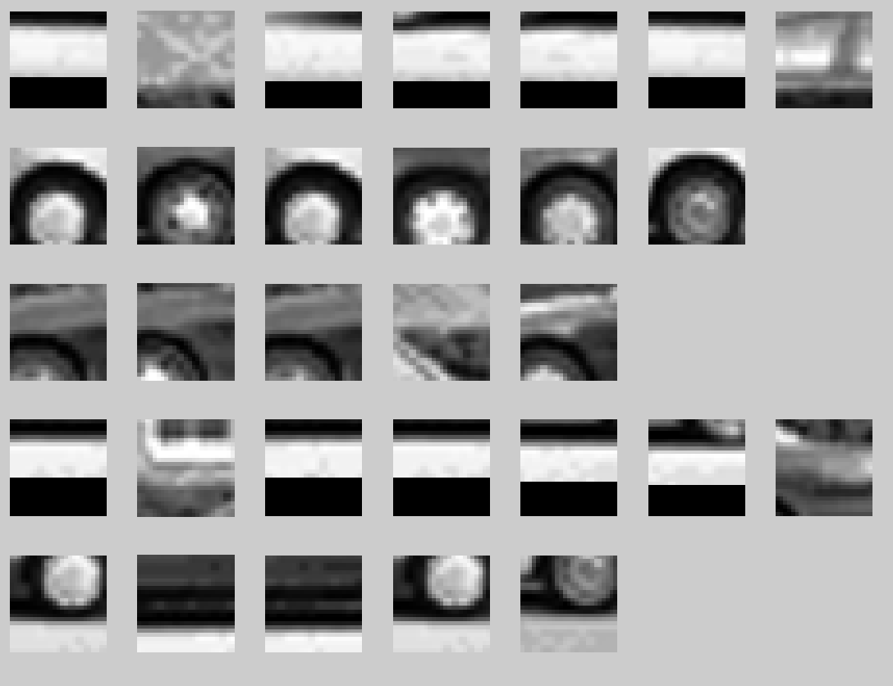
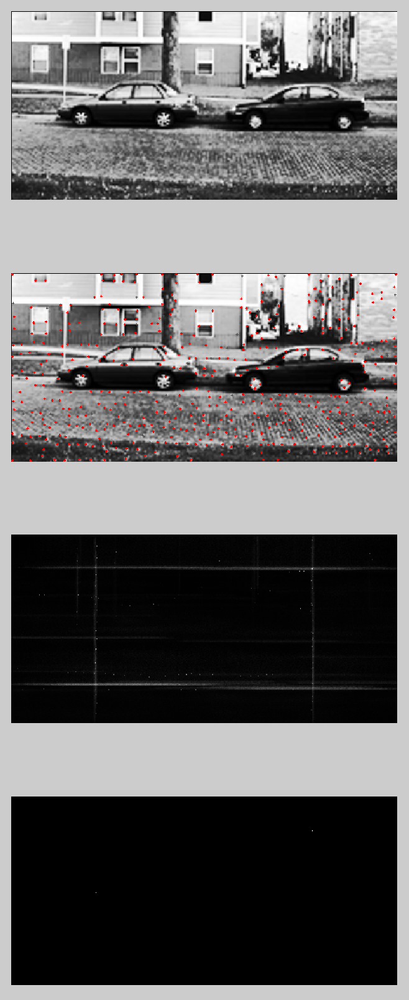
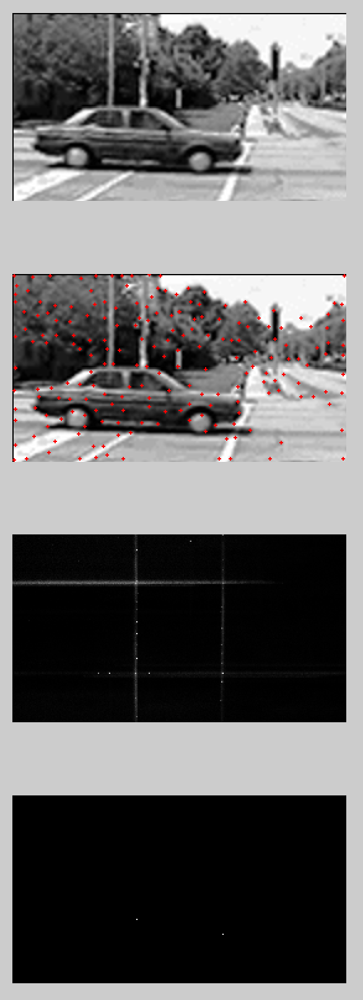
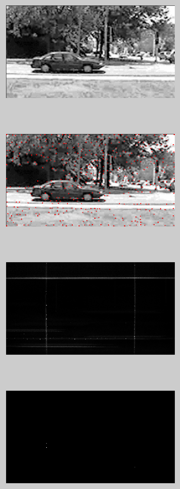

For the final project I decided to implement the approach presented in the paper:
Leibe, B., Leonardis, A., Schiele, B. "Combined Object Categorization and Segmentation with an Implicit Shape Model", 2004.
The paper presents an approach to using patches and unsupervised learning to produce an implicit shape model, by extending the Hough Transform. It further uses that method to both categorize and segment objects in the image.
The paper proposes accomplishing this in these major steps: codebook generation from the training image set, implicit shape modeling using the codebook on the training image set, identification of codebook entries and reconstruction of the implicit shape model on the test image using a Hough transform, and segmentation of the test images.
To generate the codebook, first interest points are found in the training images using the Harris interest point detector. Patches are extracted at each of the interest points, and all patches are clustered using a bottom-up agglomerative (non-parametric) clustering. The agglomeration step is done using an similarity metric over the patches that incorporates the "Normalized Greyscale Correlation". Patches are clustered if their similarity is over a manually chosen threshold. Once the patches have been clustered, a cluster center is found, and this is used to represent the patches in that cluster in future steps.
To construct an implicit model, the codebook is used to run over the training images again, and any patches that match the cluster centers, at least as well as the previously selected cluster threshold, are used in the implicit model. To create the implicit model, any matching patch locations with respect to object center are saved corresponding with that codebook.
Those codebook centers are then applied to patches at and around the Harris interest points of the test image. If they are similar enough (using the same threshold), the corresponding object centers are marked. Note that this requires the objects to be about the same scale in the training and test images.
The paper uses a continuous Hough space and finds maxima in Hough space using mean-shift mode finding, a non-parametric density estimator. The maxima indicate object centers, from which object extent can be derived.
After finding the object centers, the same codebook features can be used to trace out object segmentations.
For the purposes of this project, I've decided to implement some of the primary ideas in the paper.
Specifically:
The code very much follows the process described in the paper (see especially section 3). Following the code in main.m will show the step by step process precisely, here I will simply summarize and describe any changes from what is described in the paper.
The first "module" is the loading and preprocessing of the images. For this project I've used exclusively the images from the UIUC Car Data Set, which is one of the main data sets shown in the paper. The authors suggest resizing the images to a larger dimension, in order to use the same size patches, etc they did (25x25).
The preprocess_cars.m method does this exactly.. using an external resampling function that has cubic resampling already implemented, the script reads in all of the images, and resamples them into a higher resolution. The results are saved to a .mat file for easy loading and processing in later stages.
After preprocessing, the first stage is patch extraction. This is done in the extract_patches.m script. Here another external module is used to extract the Harris keypoints. I decied to use an external implementation, since the keypoint locator wasn't the point of the paper - and similar keypoint extraction methods could be substituted. Once the keypoints are found, the patches are extracted at each location and tucked away. These patches are also saved off as a .mat file, for easy loading later.
Once the patches are extracted, an agglomerative clustering algorithm is run on the patches, to try to cluster similar, repeated freature from the training set together. The paper is slightly vague on this point - there are many agglomerative algorithms. The only other specification is that it's a bottom up clustering algorithm. After researching some of the different methods, I decided to simply impelment a naive brute force agglomerative clustering method, found in agglomerative_cluster.m. The approach is simple - initialize all the patches as their own cluster, then iteratively loop over all the clusters combining any that have a similarity score over a chosen threshold. Continue this until the number of clusters stops changing (ie no more clusters are merging).
The threshold choice is done manually, by making a choice, running the clustering, and then increasing or decreasing the threshold to allow more patches to merge, or require a higher similarity score within a cluster (ie if members of a cluster are too different).
Once the clusters have been formed, we move on to codebook generation, via the create_codebook.m script. Here we take each cluster with more than K members (clusters with fewer members most likely represent non-general features, we only want general features). For this project I found K=3 to be a good threshold. A cluster center is computed. The paper gives no details on the center calculation. For this project I've implemented two versions: cluster_center.m, which uses a simple statistical mean calculation; and cluster_center_frechet.m, which uses a Frechet-mean-like approach to finding the mean, by finding the member of the cluster that is most similar the rest of the cluster - the hope being that it will represent the cluster well.
I wasn't able to find a clear distinction on which center calculation was the best. For now I assume the choice is arbitrary as long as it is reasonable.
After center calculation, the create_codebook.m script then runs the center over the training images, and notes where any matching locations are with respect to the center of the object. This is the implicit shape model.
Once the codebook and implict shape model have been constructed, we can now apply our "learned" model to a test image. This is done using the Hough transform, as follows: the Harris keypoints are found in the test image, at each point (and some neighbors) a similarity test is run against each of the codebook centers, the there is a similarity greater than the original cluster threshold the the codebook is considered match, and the relative object center recorded in the implicit shape model learning step is used to mark a "proposed" object center. This is repeated with all the Harris keypoints, with the hope that enough features will overlap object centers, revealing the location of the object.
The paper proposes using a continuous Hough space, and mean-shift mode estimation to find the peak. There is also a substantial probability model built up around the similarity score, that is taken into consideration. To simplify the scope of this project, I instead use a discrete Hough space and accumulator, and use a simple thresholding of the accumulator to find the maximum. This is all done in the hough_coverage.m script. I've written a simple show_test.m script that calls hough_coverage on a specified test image, and displays the original, the key point locations, the Hough accumulator, and the resulting maximum location. This makes it simple to manaully view location results.
In order to incorporate the negative examples from the training set without the explicit probability model, I cross check any positive matches to a codebook with all the negative codebooks, and if there is a higher correlation with one of those, I penalize the accumulation amount accordingly.
The paper goes on to describe an approach to then segmenting the located object, however to keep the project within a scope of a final project, I've decided to not implement that portion of the paper.
All images shown here are form the UIUC Car Data Set: http://cogcomp.cs.illinois.edu/Data/Car/. Note that the referenced paper used a modified subset of this data set, enhanced with additional examples. For the purposes of this project, I use the data set as is.
The data set consists of 550 positive training images (car image centered), and 550 negative training images (just background). The training images are all 100x40 pixels, they are all from normal outdoor photographs.
There are also 170 test images that are also outdoor, normal photographs, but the cars may or may not be occluded, there can also be more than one car. The cars in the test and training data sets are about the same scale.
Codebook | |
|  screen shot of samples from 5 of the clusters, centers computed using Frechet-like mean. (click to enlarge). | |
|
The figure above shows a selection of 5 clusters from a codebook generated from 1000 patches. This is a screenshot of one page of what teh show_clusters.m script shows. As you can see the clustering groups the most similar patches together. The column on the far left are the cluster centers - which is used for the actual object location. The figure above shows the cluster centers computed using cluster_center_frechet.m. | |
Same 5 clusters but now with the statistical mean center. (click to enlarge). | |
|
Above we show the same 5 clusters but with a statistical mean center in the far left column. As noted before, I didn't note any significant difference in performance of the two means, but the examples below are found using the Frechet-like mean. The codebook is made in two steps - first the clustering algorithm clusters similar patches, then the codebook script finds the centers and locates the relative object centers. It's important to note that the clustering algorithm can be quite slow. Notes are in the main.m script, but for example to run the clustering on 10k patches takes about 40 minutes. Running it on the entire UIUC Car Data set takes a day. However I've saved the computed clusters and codebooks in a .mat file, included in the linked tar file. | |
Locating Objects | |
|  screen shot of the result of location the object centers. Top is the original, 2nd shows the location of patches used (Harris keypoints), 3rd shows the rescaled Hough space accumulator, and bottom shows the located maxima. (click to enlarge). | |
|
The above figure shows the results of locating an object in one of the test images. The top image shows the original images, the next one down shows the location of the patches used (Harris keypoints), the thrid image shows the rescaled Hough accumulator, and the final image shows the maxima found using a threshold. You may have to click on the image and enlarge it to see the points in the location image. This is what the show_test.m script will display if you run it. As you can see, the algorithm successfully located the car on the left. It did not successfully locate the car on the right, and in fact has a false positive above the car on the right. However, given the simplications I've imposed on the approach presented in the paper, I think it hasn't done a bad job. | |
|  screen shot of the result of location the object centers.(click to enlarge). | |
|
A similar story is shown here, the car is successfully located, however a false positive has alos been located. This is most likely a result of the very simple technique of finding the maximum in the accumulator. All I do here is threshold with 95% of the maximum value. If a more sophisticated technique was applied, for example the mean-shift mode detection proposed in the paper, perhaps the false positive would go away. | |
|  screen shot of the result of location the object centers.(click to enlarge). | |
|
Here again we are able to successfully locate the car. However we also again show another false positive. Here again, a more sophisticated approach to Hough space peak location would probably go a long way. It's also interesting to note the Hough space. In almost every case there are dominant horizontal and vertical lines criss-crossing the accumulator. One potential explanation, of which I'm fairly confident explains this artifact, is that the any pixels in a patch coming outside the image boundaries are black. This means that most likely there are a few codebook entries that include features from the edges of the image (they would all be similar - some gry and a sharp edge of black). They would also all have a fairly similar distance to the center of the car (because all training images are of uniform size). Those edges codebook entries would match the edge of this image, and then add to the accumulator at that uniform distance to the center - resulting in the horizontal and vertical lines. One trivial way to circumvent this problem would be to reject any patches that lie on the edge. |
While I wasn't able to implement all of the features discussed in this paper, this has been a very interesting project. The approach of using an implicit shape model from various different feature vectors seems like a nice approach in general - assuming your target objects will be approximately the same size. It would be interesting to investigate similar approaches that took into account scale invariance.
It was also interesting to learn about the many sub-problems included in this approach - for example the non-parametric agglomerative clustering itself is a long-standing problem with a few established approaches, but no clear winners. Or the problem of posing the Hough accumulator as a continuous space using Mean-shift mode estimation.
{kind=link}
{kind=link}
{kind=link}
{kind=link}
{kind=link}